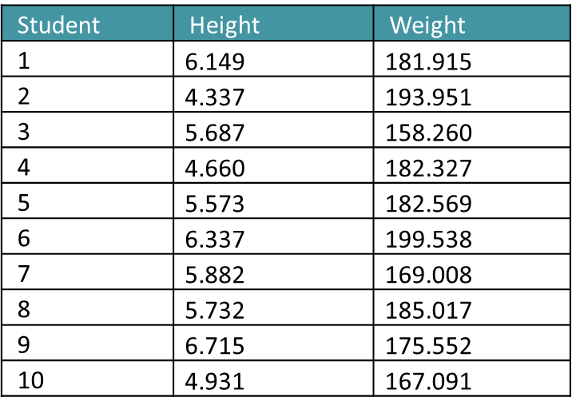

In machine learning, scaling refers to the process of converting a set of values to a new range of values. In a dataset, we have several features. The raw or unscaled features can be of different ranges, which may cause problems while training a model. For example, if we have two features, height in feet and weight in pounds, we may find that weight will dominate the model more than height. This is not ideal for getting optimal results. Therefore, we need to scale both features in a certain range.

Normalization is a scaling technique used to transform the values of a dataset into a common range. This is often done to improve the performance of machine learning algorithms, as many algorithms operate better when the data is in a standardized range.
One common method of normalization is to scale the data to a range of 0 to 1, where 0 is the minimum value in the dataset and 1 is the maximum value. This is known as min-max normalization, and it is calculated using the following formula:
where is the original value, is the normalized value